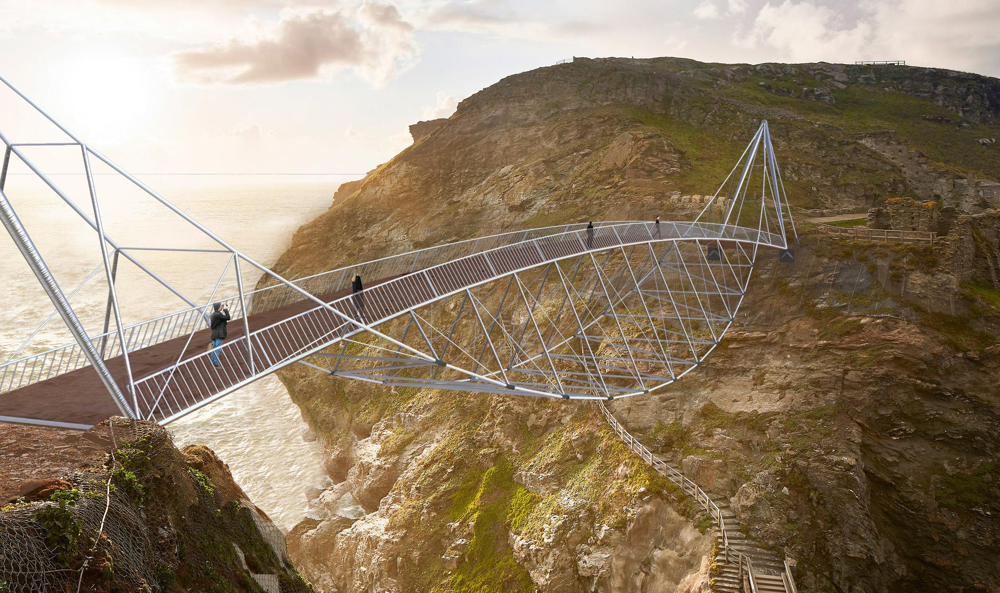
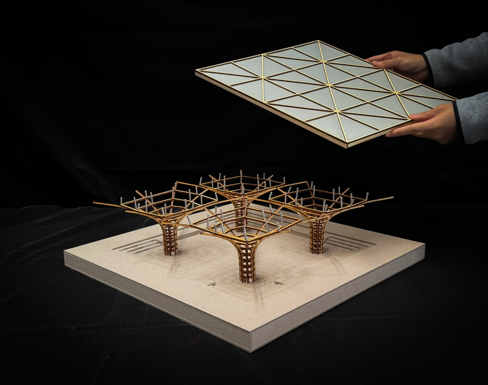
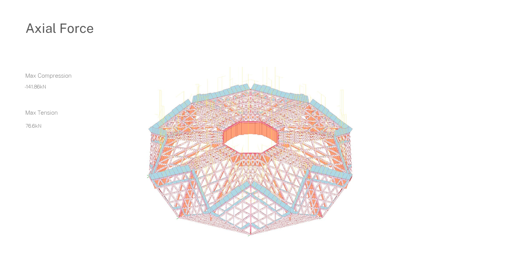

ARCH 250
Structural Design
This class focuses on the fundamental principles that affect the structural behavior of buildings. Through digital and hands-on exercises, students will learn analytical techniques for measuring and evaluating the flow of forces through structural systems. Students will also learn to consider the structural behavior of buildings as a fundamental factor in the design of architectural proposals. The goal of the class is to gain a fundamental understanding of the forces, moments, and stresses in typical building elements such as columns, beams, frames and walls and to make better informed decisions when designing resource- and environmentally-friendly buildings with lightweight and material-efficient structural systems.
Selected student work

Spring 2024

Spring 2024

Spring 2025